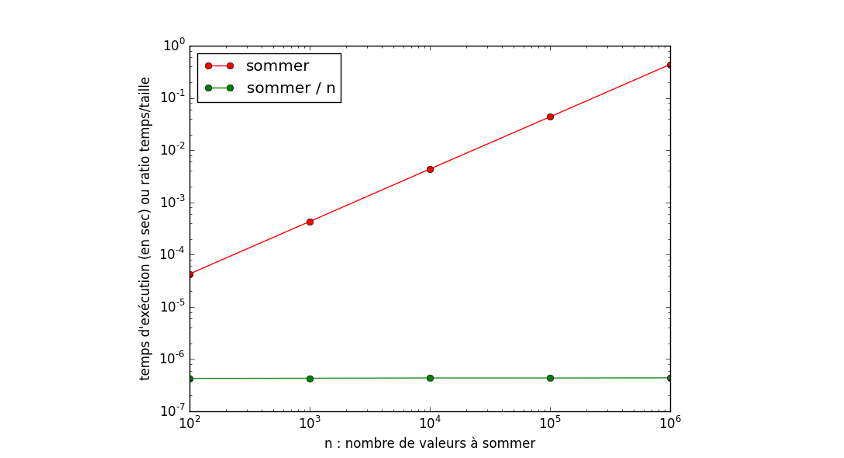

Complexités
Contents
1. Complexités#
Mis à jour : Jan 18, 2023, lecture : 20 minutes minimum, PhL.
Chapitre qui définit les notions de base de complexité algorithmique. Des exemples d’analyse de complexité en temps ou en espace sont présentés sur des algorithmes itératifs simples. Et ce sera l’occasion pour introduire l’algorithme de recherche par dichotomie dans un ensemble trié.
1.1. Motivations#
Le contexte
un problème
un algorithme qui calcule une/la solution
la solution dépend de certains paramètres du problème
un choix de ces paramètres \(\to\) une instance du problème.
Les questions du jour
Combien de temps prend l’algorithme pour calculer cette solution ?
Combien d’espace-mémoire l’algorithme utilise pour calculer cette solution ?
Autrement dit, quels sont les coûts en temps et en espace de la résolution avec cet algorithme ?
Première remarque de bon sens : ces coûts ne sont pas constants pour un problème donnée. Ils dépendent de certains paramètres de l’instance du problème.
1.2. Exemples introductifs#
1.2.1. Pb1 : calculer la somme de \(n\) entiers#
Le problème : calculer la somme de \(n\) valeurs entières
Une instance : un choix du nombre de valeurs \(n\) et ces \(n\) valeurs
On suppose que ces \(n\) valeurs sont stockées dans un tableau t: list[int].
Principe d’un algorithme :
je parcours le tableau du début à la fin,
je lis chaque valeur et je l’accumule dans une variable initialement mise à zéro
je retourne cette variable.
def sommer(t : list[int], dim_t : int) -> int:
'''somme itérative de n=dim_t valeurs entières stockées dans un tableau t
entrées. t tab d'int de longueur dim_t.
retourne res.'''
res = 0 # j'accumule dans res
for i in range(dim_t):
res = res + t[i]
return res
1.2.2. Pb2 : recherche de l’indice d’une valeur parmi \(n\) stockées dans un tableau#
Le problème : recherche l’indice d’une valeur parmi \(n\) valeurs stockées dans un tableau[^rmq:indice]
Une instance : un choix de la valeur cherchée, du nombre \(n\) de valeurs et de ces \(n\) valeurs du tableau
tPrincipe d’un algorithme :
je parcours le tableau à partir de son premier indice,
je compare chaque valeur du tableau à la valeur cherchée,
si égalité je retourne l’indice de cette valeur,
sinon je répète ce traitement sur la valeur suivante.
Je renvoie un indice significatif de l’absence si aucune égalité n’a été satisfaite après le dernier indice du tableau.
[^rmq:indice] Le cas où il faudrait choisir entre plusieurs indices d’une valeur répétée n’est pas détaillé.
def rechercheIterative(val : float, t : list[float], dim_t: int) -> int:
'''recherche itérative de val dans t tableau de taille dim_t
retourne l'indice de la première occurrence de val ou -1 si absence'''
i = 0 # j'accumule dans res
while i < dim_t:
if val == t[i]:
return i
i = i+1
return -1
1.2.3. Première analyse empirique des complexités en temps et en espace#
Complexité en temps#
Coût en temps nécessaire à la résolution de Pb1 par sommer( ) ?
Coût en temps nécessaire à la résolution de Pb2 par rechercheIterative( ) ?
Pb1 et sommer( )
le temps de résolution dépend de \(n\) : le nombre de valeurs à sommer
mais ne dépend pas de ces valeurs
ce temps de calcul est une fonction croissante de \(n\)
OK mais croissante comment ? linéaire ? quadratique ? logarithmique ?
Pb2 et rechercheIterative()
le temps de résolution dépend de \(n\), de t, de val : le nombre de valeurs, de leur ordre et de la valeur à trouver
meilleur cas :
valest à l’indice 0 et coût indépendant de \(n\)pire cas :
valest absente detet coût fonction croissante de \(n\)
Conclusions : les complexité en temps de ces 2 problèmes aux entrées très similaires dépendent de paramètres différents. La complexité en temps de la résolution de Pb2 n’est pas constante, même pour une valeur de \(n\) fixée. Elle dépend de l’instance du problème de recherche à résoudre. De façon imagée, Pb2 “dépend plus” de l’instance du problème que Pb1. Parmi les instances du Pb2, il faudra distinguer celles qui conduisent à des pires cas pour le coût en temps, et inversement à des meilleurs cas.
Complexité en espace#
Coût en espace-mémoire en temps nécessaire à la résolution de Pb1 par sommer( ) ?
Coût en espace-mémoire temps nécessaire à la résolution de Pb2 par rechercheIterative( ) ?
ça dépend aussi de n : il faut déjà stocker les \(n\) valeurs de Pb1 et Pb2 !
OK mais quel est l’espace mémoire supplémentaire pour résoudre le problème ?
Dépendant ou indépendant de \(n\) ? dépendant comment ?
1.3. complexité = f(taille)#
Il ressort de l’analyse empirique précédente que ces complexités sont des fonctions croissantes d’un paramètre significatif de la taille du problème.
Warning
Etape 1 : quel paramètre de la fonction de complexité ?
Identifier ce paramètre est l’étape 1 d’une analyse de complexité.
Exemples.
calculer la somme de \(n\) valeurs entières
on va chercher une fonction \(C(n)\) où \(n\) est le nombre de valeurs à sommer.
calculer l’addition de 2 nombres entiers
on va chercher une fonction \(C(n)\) où \(n\) est le nombre de chiffres maximal des 2 opérandes
rechercher l’indice d’une valeur dans (un tableau
tde) \(n\) valeurs entièreson va chercher une fonction \(C(n)\) où \(n\) est le nombre de valeurs, ie.
lent(t)
trier une liste de \(n\) valeurs (stockées dans un tableau
t)on va chercher une fonction \(C(n)\) où \(n\) est le nombre de valeurs, ie.
lent(t)
rechercher l’indice d’une valeur dans un tableau trié
tde \(n\) valeurs entièreson va chercher une fonction \(C(n)\) où \(n\) est le nombre de valeurs, ie.
lent(t)
1.3.1. Objectifs d’une analyse de complexité en temps#
Il s’agit maintenant d’exprimer cette fonction \(C(n)\). C-a-d. comment mesurer ce coût ?
Important
Que cherche-t-on avec une analyse de complexité ?
On cherche surtout à dégager des tendances avec cette fonction de complexité \(C(n)\).
L’objectif est d’estimer le coût théorique de la résolution du problème,
ie. l’ordre de grandeur de cette fonction de la taille du problème.
1.3.2. Un modèle de calcul pour la complexité en temps#
Le mode d’exécution réel d’un programme sur un ordinateur actuel est trop compliqué pour justifier la recherche d’un décompte précis de ce coût en temps et en mémoire. On verra aussi que la mesure même des temps d’exécution réels est moins facile qu’il n’y parait.
L’analyse de complexité s’effectue à partir d’un modèle de calcul : on exécute l’algorithme sur un modèle de machine simple (beaucoup de détails d’une véritable exécution sont ignorés) mais pas trop simpliste (les résultats et les observations réelles sont raisonnablement corrélées).
Toutes les instructions importantes comptent 1 unité de temps
1 = affectation = comparaison = opération arithmétique = opération logique = accès mémoire = entrées/sorties
Les instructions s’exécutent séquentiellement
si l’instruction p coûte c1 et l’instruction q coûte c2 alors la suite d’instructions p, q coûte c1+c2
Coût de la répétition for _ in range(n): ...
si le coût du corps de boucle ne dépend pas de i : n x coût(corps_de_boucle)
sinon : la somme des coûts de chacune des n répétitions
Coût de la répétition while ...: ...
dépend du nombre de répétitions, inconnu a priori
on peut majorer ce nombre de répétitions
Coût du branchement conditionnel if... elif... else...
inférieur ou égal au coût maximum de chaque branche d’instructions
1.3.3. Application au Pb1#
Pb1 : calculer la somme de n valeurs entières avec la somme itérative avec accumulation
1def sommer(t : list[int], dim_t : int) -> int:
2 res = 0 # j'accumule dans res
3 for i in range(dim_t):
4 res = res + t[i]
5 return res
une boucle
forpas de test
ifadditions entières, affectations d’entiers, accès (lecture) éléments d’un tableau, retour, contrôle de boucle
for
Que compter ? Où-le compter?
Warning
Etape 2 : quelles instructions sont significatives du coût du traitement ?
La fonction de complexité compte le nombre d’exécution de ces instructions significative du traitement.
Il est inutile de compter toutes les instructions de
sommer()on simplifie le décompte en identifiant certaines instructions significatives du temps de traitement.
on réduit au maximum ce nombre d’instructions significatives : on verra qu’on n’est pas à un facteur multiplicatif près (ordre de grandeur)
Ici on compte seulement les additions de la ligne 4 dans sommer()
on a autant d’affectations dans
resque d’additionson ne compte pas ces affectations,
ni les traitements cachées dans le contrôle de la boucle
for(voir remarque)écart : un facteur multiplicatif du nombre d’additions comptées
conclusion :
complexité(
sommer()) = f(nombre d’additions du corps de boucle)
Décompte : sommer() effectue 1 addition (L4) à chacune des n répétitions de la boucle pour (L3-4)
C(n) = n
L’algorithme itératif sommer a une complexité linéaire en la taille \(n\) du problème à résoudre.
Important
Quelle interprétation ?
Si on double le nombre de valeurs à sommer, on double le temps de calcul
C’est d’autant plus vrai que n est assez grand pour que le temps de ces opérations (les additions) constitue la part significative du temps total de l’exécution de sommer.
Remarque. La complexité linéaire de sommer() ne dépend pas des valeurs sommées, juste de leur nombre.
1.3.4. Du modèle pour l’algorithme à la mesure du temps d’exécution d’un programme#
On conclue cette première analyse en montrant que l’analyse précédente est significative du temps réel d’exécution de la fonction sommer().
Pourtant :
Des différences importantes entre le modèle d’analyse de complexité de l’algorithme et la chaîne actuelle de calcul : processeur, mémoires hiérarchiques, options du compilateur, parallélisme, prédiction …
La mesure des performances d’un code est un processus expérimental difficile à mettre en oeuvre de façon fiable et qui trompe facilement
Expérience dans le cours de programmation
Exemple pour des algorithmes très calculatoires
on compte le nombre d’opérations arithmétiques
on mesure les temps d’exécution d’un programme (python sur mac-intel)
Mesures sur ma machine de la somme codée en C :

sommerest bien linéaire en nombre d’additionsquel sur-coût observer quand la taille du problème est multipliée par 10 ?
1.3.5. Application au Pb 2#
Le traitement rechercheIterative() est, dans un premier temps, similaire à celui de sommer() :
1def rechercheIterative(val : float, t : list[float], dim_t: int) -> int:
2 i = 0 # j'accumule dans res
3 while i < dim_t:
4 if val == t[i]:
5 return i
6 i = i+1
7 return -1
paramètre de complexité : le nombre de valeurs
dim_tou plus simplementninstruction significative : ligne 4
mesure de complexité en temps : nombre de comparaisons de cette ligne 4
On cherche une fonction de complexité \(C(n)\).
La répétition est effectuée avec une boucle
whileLe nombre de répétition ne peut être que majoré
il dépend aussi de la valeur cherchée
valet de l’ordre des valeurs dans le tableautil y a des meilleurs cas et des pire cas
Important
Majoration dans le pire cas
On s’intéresse au coût dans le pire cas qui fournit une majoration du coût de toutes les
exécutions possibles, ie. le pire coût de résolution de toutes les instances du problème Pb2 pour un nombre n de valeurs fixé.
On peut écrire ici :
\(C(n) \le n\)
1.3.6. Conclusions de ces deux analyses de complexités en temps#
La complexité en temps de
sommer()est linéaire en le nombre de valeurs à sommer.Elle ne dépend pas des valeurs sommées, juste de leur nombre.
La complexité en temps de
rechercheIterative()est au pire linéaire en le nombre de valeurs dans lequel la recherche est effectuée.A la différence de
sommer(), cette complexité dépend denet aussi d’autres paramètres de l’instance du problèmedans le meilleur cas, le nombre de comparaisons de la ligne 4 est constant par rapport à
net égal à 1 – c’est mieux quesommer()!dans le pire cas, le nombre de comparaisons de la ligne 4 est égal à
n– c’est identique àsommer().
1.4. Complexité en espace#
Quelle quantité d’espace-mémoire est nécessaire pour que l’algorithme trouve la solution du problème ?
On cherche encore une fonction croissante d’un paramètre significatif de la taille du problème
Quel espace-mémoire mesurer ?
on ne compte pas la place des données d’entrée, ni des résultats : incompressible quelque soit l’algorithme
on compte uniquement la place mémoire supplémentaire nécessaire à la résolution
Cas facile / moyen / un peu difficile :
facile = statique : toutes les variables utilisées sont connues dans le code-source
on compte leur encombrement en mémoire selon leurs types : scalaire, tableau 1D, 2D …
moyen = dynamique
la résolution utilise de l’allocation dynamique de mémoire, eg. les
listpythonune analyse plus technique est nécessaire
un peu difficile = appels récursifs
l’algorithme est récursif … à venir très bientôt, étude regroupée en fin de ce chapitre
la complexité en espace-mémoire peut alors être très, voire trop importante
l’analyse s’appuie sur des expressions récurrentes
1.4.1. Exemple avec Pb1#
Complexité en espace-mémoire de sommer()?
1def sommer(t : list[int], dim_t : int) -> int:
2 res = 0 # j'accumule dans res
3 for i in range(dim_t):
4 res = res + t[i]
5 return res
Analyse :
ligne 1 : on ne compte pas les
nplaces-mémoire pour l’entrée : le tableau d’entierstlignes 2 et 5 : on ne compte pas la place mémoire pour le résultat retourné
resil suffit de pouvoir stocker l’accumulation des
t[i]avec et dansresau plus un seul entier suffit (selon que l’accumulation s’effectue en place ou non) et ce quelque soit la taille du problème !
on oublie encore le contrôle de la boucle
forqui nécessite la place mémoire pouriau moins.
Conclusion : La complexité en espace-mémoire de sommer() est constante.
Remarque : c’est encore la ligne 4 qui est significative !
1.5. Un autre exemple de complexité polynomiale en temps#
Vocabulaire important.
Par complexité polynomiale, on entend une fonction \(C(n)\) qui est un polynôme en \(n\).
complexité linéaire, quadratique, cubique, …
Le degré de ce polynôme donne l’ordre de grandeur cherché
1.5.1. Complexité quadratique du produit matrice x vecteur#
Pb : calculer le produit matrice x vecteur
def Au(A : list[list[float]], nblA: int , nbcA: int, u : list[float], nblu: int) -> list[float]:
''' calcule produit mat-vec pour :
A matrice carrée de taille nblA x nbcA
u : vecteur de taille nblu
si nbcA == nblu retourne
v: vecteur de taille nblA
'''
assert nbcA == nblu
for i in range(nblA):
v[i] = 0 # j'accumule dans v[i]
for j in range(nbcA):
v[i] = v[i] + A[i][j] * u[j]
return v
Analyse simplifiée en fixant toutes les dimensions à n:
appel pour
A[n][n], u[n] -> v[n]on simplifie l’écriture du code pour cet appel :
nblA == nbcA == nblu == n
1def Au(A : list[list[float]], u : list[float], n: int) -> list[float]:
2 for i in range(n):
3 v[i] = 0 # j'accumule dans v[i]
4 for j in range(n):
5 v[i] = v[i] + A[i][j] * u[j]
6 return v
Exemple de décompte (presque) exhaustif des instructions :
Deux boucles for imbriquées de taille n chacune.
boucle extérieure : n répétitions de
ligne 3 : 1 affectation
ligne 4 : boucle intérieure : n répétitions de
ligne 5 : 1 *, 1 +, 1 =
\(\to\) total intérieur = 2n opérations arithm., n affectations
Total extérieur-intérieur :
2n\(^2\) opérations
n\(^2\) + n affectations
Remarque.
Bien que détaillé, ce décompte basé sur les instructions d’affectations explicites n’est pas exhaustif en pratique. En effet, les construction for comportent implicitement des affectations, comparaisons et incrémentations qui n’ont pas été ajoutées au décompte total.
En pratique, la construction for i in range(n): comporte
1+n affectations,
n incrémentations,
n+1 comparaisons.
Ces instructions représente le contrôle de la boucle for.
Quel est l’effet de ce contrôle sur le décompte effectué pour les 2 boucles imbriquées ? On vous laisse vous convaincre qu’il ne fait qu’augmenter les facteur multiplicatifs des expressions qui dépendent de \(n\). Ce contrôle (même dans le cas imbriqué) n’impacte pas le degré en \(n\) des expressions identifiées. Lorsque \(n\) est arbitrairement grand, c-a-d. \(n \rightarrow +\infty\), ces expressions varient comme leur terme de plus haut degré. Leur coefficient (lui impacté par le facteur multiplicatif) n’a aucun d’effet sur l’ordre de gradeur de l’expression, et à un effet secondaire sur la tendance.
Asymptotiquement : pour n arbitrairement grand,
C(Ax) \(\sim\) n\(^2\) : complexité quadratique en temps
C’est cette tendance asymptotique qui nous intéresse. Ainsi, un décompte simplifié aux instructions significatives de cette complexité asymptotique est souvent suffisant pour nos études de complexité. Attention cependant de ne pas oublier, dans ce cas, qu’une telle complexité cache des facteurs multiplicatifs qui peuvent être importants pour des “petites” valeurs de \(n\). Nous reviendrons sur cet aspect dans une section prochaine.
Exercice. Effectuer une analyse de complexité à partir de l’expression mathématique du produite matrice x vecteur.
1.5.2. Mesures du temps d’exécution du produit matrice-vecteur#
{kind=link}
Fig. 1.1 Les mesures sont alignées sur une droite parallèle à celle \(n^2\) (une droite en échelle log-log).#
L’échelle log-log est adaptée au tracé de ce temps d’exécution quadratique en la taille : la taille prend des ordre de grandeurs différents. Ici de 10 à 10000.
La pente vaut 2, ce qui représente :
\(10^1\) sur x \(\to\) \(10^2\) sur y
soit donc x \to\( \)x^2$
Attention : \(\log_10\) sur les axes des x et des y mais avec des échelles différentes ! (comparer la distance entre deux valeurs espacées d’un facteur 10).
Ci-après une autre illustration où le temps de calcul normalisé par \(n^2\) est bien une droite horizontale.
Question : que représente la valeur indiquée par cette droite ?
{kind=link}
Fig. 1.2 Cette autre échelle log-log est explicite.#
Conseil : être à l’aise pour choisir le tracé le plus parlant !
1.5.3. Complexité en mémoire du produit matrice x vecteur#
Assez similaire à celle de sommer().
1def Au(A : list[list[float]], u : list[float], n: int) -> list[float]:
2 for i in range(n):
3 v[i] = 0 # j'accumule dans v[i]
4 for j in range(n):
5 v[i] = v[i] + A[i][j] * u[j]
6 return v
données et résultats
entrée :
A[n][n], u[n]\(\to\) n\(^2\) + nrésultat :
v[n]\(\to\) n
Un espace mémoire de n\(^2\) + n unités-mémoire est minimal (sauf matrice ou vecteur particulier)
algorithme
ligne 5 : mise à jour de chaque composante :
une variable intermédiaire : résultat de la
*si l’accumulation+effectuée en place (aucun espace-mémoire nécessaire)ou deux variables intermédiaires si l’accumulation
+non “en place”.
Conclusion : espace mémoire supplémentaire constant quelque soit n.
1.6. Complexité et \(\log_2\)#
Remarque motivante
La fonction \(\log_2(x)\) croît beaucoup moins vite que toute fonction polynomiale en \(x\) : \(x, x^2, x^3, \dots\) – et même que toute fonction à puissance rationnelle en \(x\) : \(\sqrt x, x^{1/3}, \dots\)
1.6.1. Pas que des puissances entières de la taille du pb#
Exemple de référence à connaître : algorithmes de recherche
Le problème : rechercher si une valeur est présente au non dans un tableau de n valeurs
mesure de complexité : nombre de comparaisons
paramètre de cette complexité :
nle nombre de valeurs dans le tableaudéjà vu : un algorithme de complexité linéaire : recherche séquentielle (itérative)
\(C(n) = n\) dans le pire cas
Un problème proche : rechercher si une valeur est présente au non dans un tableau de n valeurs triées
mesure de complexité : nombre de comparaisons
paramètre de cette complexité :
nle nombre de valeurs dans le tableaunouveau : un algorithme de complexité logarithmique : recherche dichotomique
Principe de l’algorithme de recherche par dichotomie dans un tableau trié :
Je partage le tableau en 2 et je compare la valeur du milieu avec la valeur cherchée.
Selon le résultat de la comparaison, je jette la moitié droite ou gauche du tableau.
Je recommence sur ce tableau de taille moitié : partage en 2, comparaison milieu, abandon éventuel d’une moitié,
jusqu’à avoir trouvé la valeur et là, je m’arrête
OU obtenir un (sous-)tableau réduit à 0 ou 1 élément et là, je m’arrête aussi … peut-être sans l’avoir trouvé.
Analyse :
Nombre de comparaisons = nombre de découpages en 2 du tableau de longueur n
Nombre maximal de comparaisons = nombre de découpages en 2 “de n valeurs” jusqu’à l’arrêt “avec absence” : le pire cas = \(\lceil \log_2(n) \rceil\)
Expliquer ce \(\log_2(n)\)
Un peu de maths pour compter ce nombre de divisions par 2 :
question : combien de découpages par 2 de \(n\) valeurs jusqu’à en obtenir 1 seule ?
réponse : \(\lceil \log_2(n) \rceil\) ou plus simplement \(\log_2(n)\) si \(n\) est une puissance de 2.
comprendre le principe de la réponse : partons de \(n = 2^p = n_0\)
on divise \(n_0\) par 2 \(\to\) il reste \(n_1 = n_0/2 = 2^{p-1}\) valeurs
on divise \(n_1\) par 2 \(\to\) il reste \(n_2 = n_1/2 = 2^{p-2}\) valeurs
\(\dots\)
on divise \(n_{k-1}\) par 2 \(\to\) il reste \(n_k = n_{k-1}/2 = 2^{p-k}\) valeurs
on veut trouver \(k\) tel que \(2^{p-k} = 2^0 = 1\) valeur
\(k = p\) convient
il faut donc \(p\) divisions par 2 de \(n = 2^p\)
et \(p = \log_2(2^p) = \log_2(n)\).
En partant d’une puissance de 2, on exhibe facilement \(\log_2(n)\).
Pour un autre \(n\) quelconque, on majorera par la puissance de 2 immédiatement supérieure (les notations \(\lfloor ~ \rfloor\) et \(\lceil ~ \rceil\) sont commodes pour ces cas).
Pour cette analyse en tendance, on conserve le nombre plus simple \(\log_2(n)\).
Résultat : la complexité en temps de la recherche dichotomique est
\(C(n) = \log_2(n)\) dans le pire cas.
Conclusion.
Algorithme |
Hypothèse |
Complexité en temps |
|---|---|---|
Recherche séquentielle |
aucune |
\(C(n) = n\) dans le pire cas |
Recherche dichotomique |
valeurs triées |
\(C(n) = \log_2(n)\) dans le pire cas |
1.6.2. Réduire la complexité ? Diviser pour régner !#
La recherche dichotomique est un exemple d’algorithme de complexité logarithmique
Plus généralement, les algorithmes issus de stratégie diviser pour régner (divide and conquer) introduisent des complexités en \(\log\) : \(\log(n)\) ou \(n \times \log(n)\) et même \(n \times \log( \log(n) )\).
Stratégie diviser pour régner
principe général basé sur la récursivité
réduire le problème en un problème similaire ET de taille réduite …
… recommencer cette réduction …
… jusqu’à obtenir un problème suffisamment petit pour pouvoir trouver sa solution immédiatement,
à partir de cette solution, construire la solution du problème plus grand …
… et ainsi de suite jusqu’à obtenir la solution du problème de départ
Exercice. Identifier que ce principe est présent dans la recherche dichotomique !
1.7. Complexité asymptotique#
Section où sont introduites les notations de Landau largement utilisées en algorithmique.
1.7.1. Quelle complexité ?#
Ce qui importe : c’est l’ordre de grandeur du coût mesuré comme une fonction de la taille du problème, quelque soit l’instance du problème.
En effet, la question pratique pertinente est, par exemple pour la complexité en temps :
Quel surcoût de temps pour résoudre un problème deux fois plus gros, dix fois plus gros ?
10 fois plus gros avec une complexité :
cubique = 1000 fois plus long
quadratique = 100 fois plus long
linéaire = 10 fois plus long … à la rigueur
racine carrée = environ 3 fois plus long … oui !
logarithmique = 2 fois plus long … oui : je veux !
exponentiel = 1010 fois plus long … aie aie aie : trop cher pour moi !!!!
Le même question se pose pour l’espace-mémoire nécessaire.
Exercice. Il y a pire qu’exponentiel. Quoi ?
1.7.2. Complexité asymptotique et notations de Landau#
On formalise pour dégager les tendances asymptotiques. On se focalise d’abord sur la tendance du pire cas.
Pour ce pire cas, un algorithme \(\cal{A}\) peut être par exemple pour la complexité en temps :
aussi rapide qu’un algorithme quadratique \(\cal{Q}\)
au moins aussi rapide qu’un algorithme quadratique \(\cal{Q}\)
au plus aussi rapide qu’un algorithme quadratique \(\cal{Q}\)
La comparaisons asymptotique de fonctions est adaptée à la description de ces 3 tendances. En notant \(C_{\cal{A}}(n)\) la complexité de l’algorithme \(\cal{A}\), on introduit les notations de Landau : \(\Theta(), \Omega()\) et \(\cal{O}()\) pour caractériser respectivement les 3 tendances asymptotiques des pire cas de l’algorithme \(\cal{A}\) :
\(C_{\cal{A}}(n) = \Theta(n^2)\) : notion d’équivalent asymptotique
\(C_{\cal{A}}(n) = \Omega(n^2)\) : notion de minorant asymptotique
\(C_{\cal{A}}(n) = \cal{O}(n^2)\) : notion de majorant asymptotique
En pratique, la complexité asymptotique dans le pire des cas sera souvent décrite par son majorant asymptotique, ie. avec la notation \(\cal{O}\). En effet, le décompte du coût du traitement s’exprime souvent plus facilement sous forme de majoration d’une certaine quantité atteinte dans le pire cas.
Attention : on n’a pas écrit que l’analyse d’un pire cas ne pouvait conduire qu’à une majoration.
(\(\star\)) Expression formalisée et principales propriétés de ces notations#
Majorant asymptotique : \(f = \cal{O}(g)\) ssi :
il existe une constante \(c > 0\) et un entier \(n_0\) telle que pour tout \(n \ge n_0\), \(f(n) \le c \times g(n)\).
Minorant asymptotique : \(f = \cal{\Omega}(g)\) ssi :
il existe une constante \(c > 0\) et un entier \(n_0\) telle que pour tout \(n \ge n_0\), \(f(n) \ge c \times g(n)\).
Equivalent asymptotique : \(f = \cal{\Theta}(g)\) ssi :
il existe deux constante \(c_1, c_2 >0\) et un entier \(n_0\) telle que pour tout \(n \ge n_0\), \(c_1 \times g(n) \le f(n) \le c_2 \times g(n)\).
Ce qui correspond aux schémas suivants.
{kind=link}
Fig. 1.3 \(f = \cal{O}(g)\)#
{kind=link}
Fig. 1.4 \(f = \cal{\Omega}(g)\)#
{kind=link}
Fig. 1.5 \(f = \cal{\Theta}(g)\)#
Vocabulaire
On dit aussi \(f\) est dominée asymptotiquement par \(g\) lorsque \(f = \cal{O}(g)\).
Propriétés
transitivité : \(f = \cal{O}(g)\) et \(g = \cal{O}(h)\) alors \(f = \cal{O}(h)\)
invariance par multiplication : si \(f = \cal{O}(g)\) alors \(k \times f = \cal{O}(g)\) pour \(k > 0\)
addition : \(f1 = \cal{O}(g1)\) et \(f2 = \cal{O}(g2)\) alors \(f1+ f2 = \cal{O}(g1+g2)\)
multiplication : \(f1 = \cal{O}(g1)\) et \(f2 = \cal{O}(g2)\) alors \(f1 \times f2 = \cal{O}(g1 \times g2)\)
Rappel. Attention aux constantes multiplicatives cachées.
Ces bornes asymptotiques cachent des constantes multiplicatives qui peuvent faire la différence entre 2 algorithmes de même complexité asymptotique.
{kind=link}
Fig. 1.6 Principales classes de complexité#
1.7.3. Expressions et équivalents asymptotiques à connaître#
Fonction de complexité dans le cas itératif = sommes, polynômes, produits, factorielles (aie)
Somme arithmétique des n premiers entiers : \(n(n+1)/2 = \Theta(n^2)\)
Somme arithmétique des n premiers carrés : \(n(n+1)(2n+1)/6 = \theta(n^3)\)
Somme arithmétique des n premiers cubes : \(n^2(n+1)^2/4 = \theta(n^4)\)
Polynôme en n de degré \(\le\) k et à coefficients constants = \(\Theta(n^k)\)
\(a_k n^k + a_{k-1} n^{k-1} + \dots + a_1 n + a_0 = \Theta(n^k)\). -Série harmonique : \(1+1/2+1/3+\dots+1/n = \ln(n) + \cal{O}(1)\)
Produits \(\to\) Sommes : \(\ln(a_1 \times a_2 \times \dots \times a_n) = \ln(a_1) + ln(a_2) + \dots + \ln(a_n)\)
Ordres de grandeur pratiques
Notation |
Dénomination |
Temps pour n = \(10^6\) et 1GHz |
Commentaires |
|---|---|---|---|
\(\cal{O}(1)\) |
temps constant |
1 ns |
rare |
\(\cal{O}(log n)\) |
logarithmique |
10 ns |
instantané ou presque. Il y a une constante cachée et du log2 en pratique |
\(\cal{O}(n)\) |
linéaire |
1000 ns = 1 ms |
sera supérieur à 1 min pour des tailles de pb comparables aux taille de RAM actuelles. Donc pb prédominant = gestion de la mémoire |
\(\cal{O}(n^2)\) |
quadratique |
\(1/4\) h |
ne pas dépasser n = \(10^6\) |
\(\cal{O}(n^k)\) |
polynomiale |
k= 3 \(\to\) 30 ans |
et pourtant on en rencontre souvent |
\(\cal{O}(2^n)\) |
exponentielle |
plus de 10300 000 milliards d’années |
inutilisable en pratique sauf pour des tout petits problèmes : n < 50 |
1.8. Complexité d’algorithmes itératifs#
On explicite maintenant quelques expressions de fonctions de complexité d’algorithmes classiques ainsi que les expressions asymptotiques associées.
1.8.1. Itérations classiques#
Boucle de n répétitions indépendantes de p instructions : \(n \times p\) avec p < n quand n est grand
for i in range(n):
inst_1; inst_2; ..., inst_p
\( \to \Theta(n)\), asymptotiquement linéaire
Boucle de n répétitions dépendantes : \(1+2+\dots+n = n(n+1)/2\)
for i in range(n):
inst_1; ... ; inst_i;
\(\to \Theta(n^2)\), asymptotiquement quadratique
Deux boucles imbriquées indépendantes de longueur n qui répètent p instructions : \(n^2 \times p\) avec p <n quand n est grand
for i in range(n):
for j in range(n):
inst_1; inst_2; ..., inst_p
\(\to \Theta(n^2)\), asymptotiquement quadratique
Deux boucles imbriquées indépendantes de longueur n et corps de boucle interne dépendant : \(n(1+2+\dots+n) = n \times n(n+1)/2\)
for i in range(n):
for j in range(n):
inst_1; ... ; inst_j
\(\to \Theta(n^3)\), asymptotiquement cubique
Répétition avec structure while :
while cond:
inst_1; ... ; inst_p;
Question : peut-on majorer le nombre de fois où cond est vérifiée ?
Exemple : je parcours une liste (de longueur n) jusqu’à trouver une valeur donnée
Réponse : cond est évaluée au plus (au pire) n ou n+1 fois (liste_non_vide, il_existe_un_élément_suivant)
\(\to \) Complexité majorée par \(n \times p\), \(\cal{O}(n)\), asymptotiquement majorée linéairement
1.9. (\(\star\)) Complexité d’algorithmes récursifs#
1.9.1. Fonction de complexité = relation de récurrence#
Exemple Forme récursive du calcul de \(n!\)
La fonction de complexité s’écrit \(C(n) = C(n-1) + 1\)
l’appel récursif à
fact(n-1): \(C(n-1)\)1 multiplication : 1
(la comparaison : 1)
et \(C(0) = 1\)
On élimine la récurrence et on obtient : \(C(n) = n+1\).
Complexité asymptotique : complexité linéaire (déjà vue).
Exercice Montrer que la forme récursive de l’exponentiation classique est d’une complexité identique.
Expression de C(n) sous forme non récursive
Il existe plusieurs méthodes dont celle des éliminations successives naturelle dans ce cas.
\(C(n) = C(n-1) + 1\)
\(C(n-1) = C(n-2) + 1\)
\(C(n-2) = \dots\)
\(\dots\)
\(C(2) = C(1) + 1\)
\(C(1) = C(0) + 1\)
\(C(0) = 1\)
On somme chaque ligne, les membres de gauche s’éliminent successivement excepté le premier et on obtient :
\(C(n) = 1 + 1 + \dots + 1 = n + 1\)
Les expressions récurrentes d’algorithmes récursives peuvent prendre des formes compliquées à réduire. Quelques-unes sont classiques et à connaître.
On distingue deux familles de récurrences selon la variation de son indice.
Les récursions décrémentales où les indices de deux itérations successives sont distants d’une valeur constante (1 ou \(p\))
\(n \to n-1\) ou \(n \to n-p\)
Les récursions “divide-and-conquer” où les indices de deux itérations successives varient d’un facteur constant et > 1
Les récursion dichotomiques en sont un exemple : \(n \to n/2\)
On simplifie l’analyse de ces récurrences en fixant \(C(0)=1\).
1.9.2. \(C(n)\) fonction de \(C(n-1)\)#
\(C(n) = C(n-1) + b\)
exemples : factorielle, exponentiation naïve, recherche séquentielle récursive
cas linéaire : \(C(n) = n \times b + C(0) = \Theta(n)\)
suite arithmétique de pas b
\(C(n) = C(n-1) + a \times n + b\)
exemples : traitement de coût linéaire avant l’appel récursif, tri à bulle
cas quadratique : \(C(n) = a \times n(n+1)/2 + (n+1) \times b = \cal{O}(n^2)\) pour \(C(0)= b\)
\(C(n) = a \times C(n-1) + b\)
exemples : répéter a fois l’appel récursif
cas exponentiel : \(C(n) = (a^{n+1} -1)b' = \theta(a^{n+1})\) avec \(b' = b/(a-1)\) pour \(C(0)=b\)
suite arithmético-géométrique de raison a et de pas b
1.9.3. \(C(n)\) fonction de \(C(n/2)\)#
Reconnaître le cas d’une récursion dichotomique et l’apparition de \(\log_2\) dans la fonction de complexité.
\(C(n) = C(n/2) + b\)
exemples : exponentiation rapide, élimination de la moitié des valeurs en temps constant, recherche dichotomique
cas logarithmique: \(C(n) = C(1) + b \times log_2(n) = \cal{O}(\log(n))\)
\(C(n) = C(n/2) + n\)
exemples : traitement linéaire avant appel récursif dichotomique
cas linéaire: \(C(n) = \cal{O}(n)\)
\(C(n) = 2 \times C(n/2) + a \times n + b, a \neq 1\)
exemples : traitement linéaire avant 2 appels récursifs dichotomiques, tri fusion
cas semi-logarithmique : \(C(n) = \cal{O}(n \log(n))\)
\(C(n) = a \times C(n/2) + b, a \neq 1\)
exemples : répéter \(a\) fois l’appel récursif dichotomique
cas polynomial : \(C(n) = cal{O}(n^{\log_2 a})\)
1.9.4. (\(\star\star\)) Autres cas#
Selon le traitement récursif et la stratégie divide-and-conquer, la fonction de complexité peut prendre une forme plus générale comme :
\(C(n) = a \times C(n/b) + c \times n^k + d\) pour \(b \ge 2, k \ge 0\) et \(a, c, d > 0\).
Un théorème basé sur la comparaison de \(a\) et de \(b^k\) (ou de façon équivalente la comparaison de \(\log_b(a)\) et \(k\)) fournit l’expression du comportement asymptotique de la fonction de complexité \(C(n)\).
1.10. Synthèse#
Complexités en temps et en espace
principe, objectif général et modèle d’analyse de complexité
identifier ce qu’il est significatif de mesurer et le paramètre du problème qui dirige cette mesure
distinguer pires cas vs. meilleurs cas
savoir comment on compte dans les cas itératifs ou récursifs
Complexité asymptotique
notations de Landau : \(\cal{O}, \Omega, \theta\) et leurs propriétés
savoir conclure : quel est le sur-coût quand je multiplie la taille de mon problème par \dots ?
Exemples significatifs d’algorithmes de différentes complexités en temps
logarithmique : recherche dichotomique dans une liste triée
linéaire : sommes, parcours ou recherche itérative, …
polynomiale : quadratique (produit matrice-vecteur, certains algorithmes itératifs de tris), cubique (produit matrice-matrice)
semi-linéaire \(n \log(n)\) : certains algorithmes récursifs de tris
Réduire la complexité : pourquoi ? toujours possible ? comment ?
pour résoudre des problèmes de grande taille
mais aussi des problèmes pas nécessairement “gros” mais compliqués
Il existe de nombreux problèmes qu’on se sait pas résoudre exactement en un temps réaliste, souvent des problèmes d’optimisation : min, max, le plus court, …
complexité exponentielle : problème du sac à dos \(\to 2^n\) configurations à tester pour (par force brute)
complexité factorielle : problème du voyageur de commerce \(\to n!\) parcours à tester (naïf)
en pratique (source wikipedia, temps de base = 10 nanosec)
exponentielle : pour n = 50, temps T = 130 jours,
exponentielle : pour n= 250 = \(10^{59}\) ans !
factorielle : pour n = 50, temps T = \(10^{48}\) ans
Pertinence pratique du modèle utilisé et de l’analyse menée
modèle simple vs. exécution machine complexe
lecture-écriture mémoire : tout sauf du temps constant, compliqué
opération arithmétique : addition vs. division, entier vs. flottant
exécution séquentielle des instructions : ça n’existe plus – ou presque plus
les machines actuelles exécutent plusieurs instructions en parallèle, dans un ordre différent du programme, elles spéculent sur le résultats de tests ou d’accès mémoire …
les estimations asymptotiques (grande taille du pb) masquent ces effets
demain : calcul quantique ?
Complexité algorithmique
une sensibilisation à une première notion d’informatique théorique
nos premiers objectifs :
mieux comprendre l’efficacité d’un algorithme
estimer les effets de la taille d’un problème sur le temps de résolution
théorie de la complexité : une branche de l’informatique
objectif : classer les problèmes selon leurs difficultés de résolution, c-a-d. le coût de leur résolution quelque soit l’algorithme utilisé et les relations entre ces classes de problèmes
modèles d’exécution : RAM (ici, Random Access Memory), machines de Turing (“dites” déterministes ou non déterministes), automates, …
autres aspects théoriques à voir ce semestre (peut-être)
terminaison, correction et preuves
1.10.1. Avoir les idées claires#
Connaître le principes de l’analyse de la complexité en temps : modèle de calcul, mesure et paramètre de la complexité, meilleur et pire cas
Savoir exprimer et exploiter une complexité asymptotique : notations de Landau, principales classes de complexité des algorithmes, interprétation pratique de ces classes
Savoir établir la complexité d’algorithmes itératifs simples ou récursifs terminaux.
1.10.2. Savoir-faire#
Connaître des exemples significatifs d’algorithmes de complexité polynomiale et logarithmique (complexité, pires et meilleurs cas)
Savoir identifier (sans nécessairement le prouver) la complexité, les meilleur-pire cas d’un algorithme